| 日付 | 2026年9月20日（日） - 2026年9月23日（水） | ||||||
|---|---|---|---|---|---|---|---|
| 山域 | 東北の山 | ||||||
| メンバー | 家族（妻） | ||||||
| 山行形態 | 前夜泊3泊4日車中泊 | ||||||
| アクセス | 車 | ||||||
| ルート (Map1) |
|
2日目
本日は白神岳に登る予定。前日に登山口に入り車中泊。標高190m。
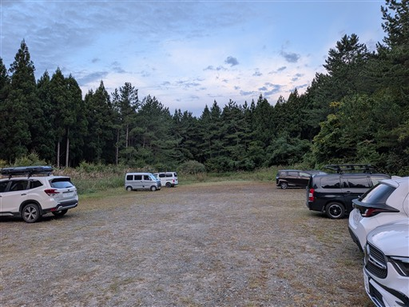
きれいなトイレがあり、非常に整備されている登山口だ。
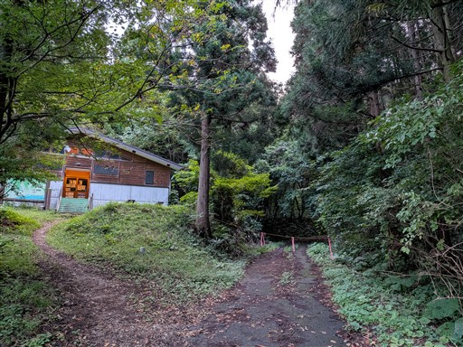
車道の終点から登山開始。
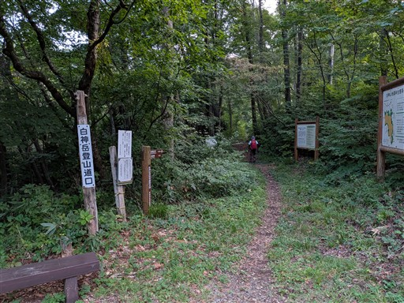
登山口にあるずいぶん立派な記帳所。
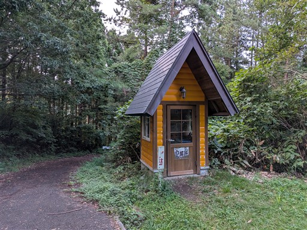
一箇所、登山道が崩壊している。
右側から行くのが正しそうだが、みんな左側を通過してそうだ。
そちらの方が歩きやすいが、そのまま崩落しそう。
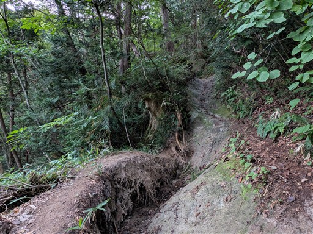
この辺りはまだ植林地帯も広がる。
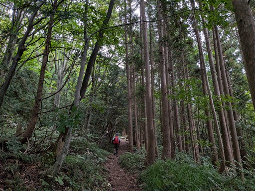
水場。冷たい水が出ている。
トラバース道なので、所々に水場がある。
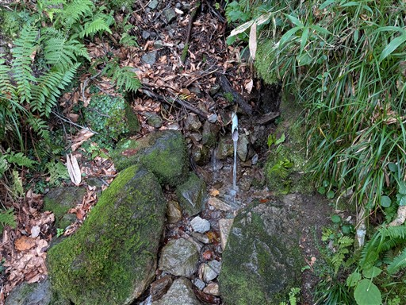
立派なブナの木。
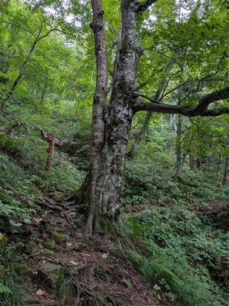
ブナの森の中を登っていく。
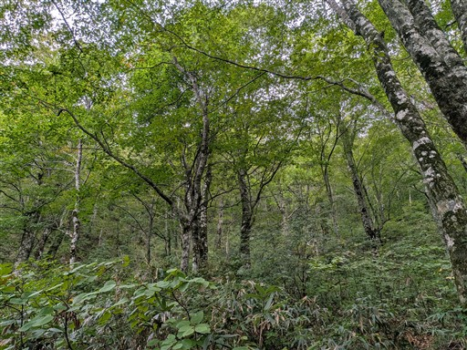
ホコリタケの幼菌。
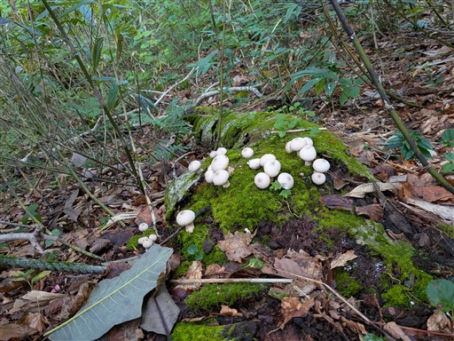
マテ山分岐に到着。寄り道することにする。
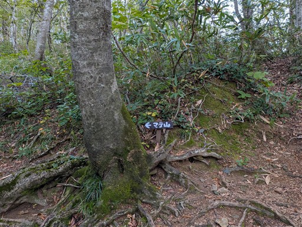
漢字で書くと「蟶山」。ちょっと読めない。
展望が広がるかと思ったが、樹林に囲まれた地味な山頂だ。
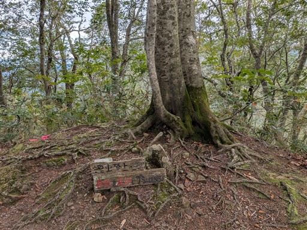
分岐点に戻ってさらに先に進む。
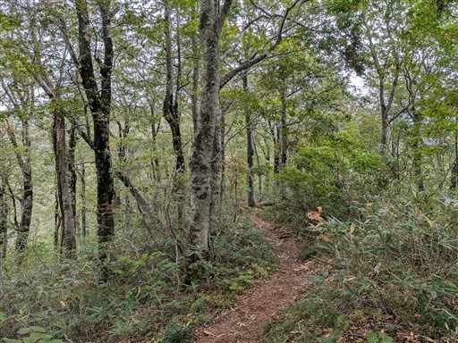
きれいに紅葉している葉がある。ここだけ赤いのでかなり目立つ。
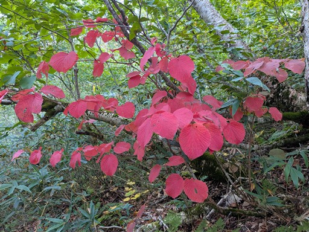
ナナカマドの実も赤い。
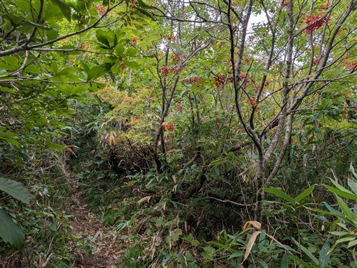
途中で展望が広がる。見えているのは日本海。
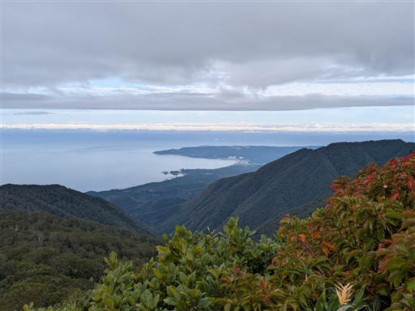
エゾオヤマリンドウ。鮮やかな青色だ。あちらこちらに咲いている。
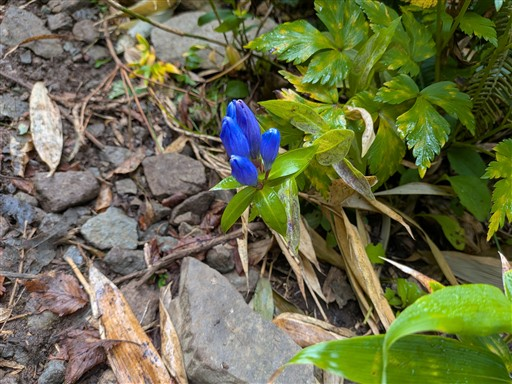
山頂部の稜線が見えてきた。
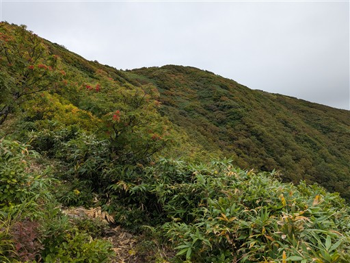
稜線に到達。
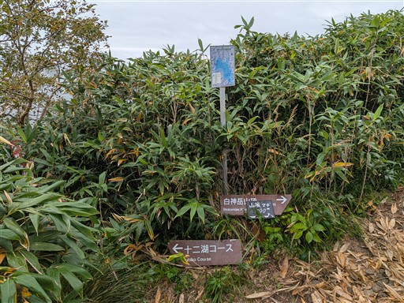
十二湖に向かう縦走コースは少し藪っぽい。
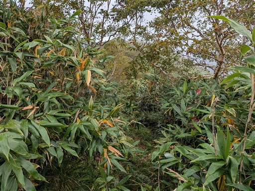
一方、白神岳に通じる道はきれいだ。
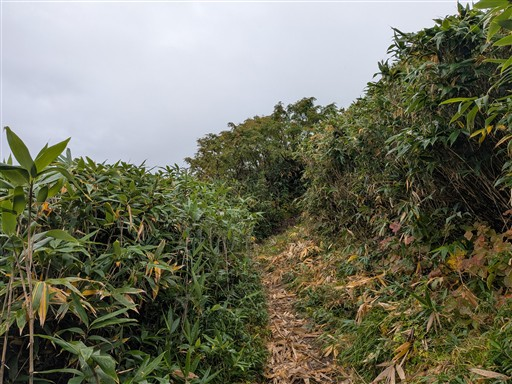
この稜線が世界遺産地域の縁にあたる。
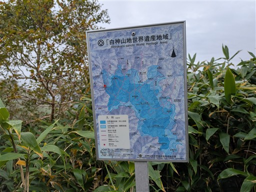
目の前に広がる白神山地の山々。
雲が多いが幻想的な風景だ。
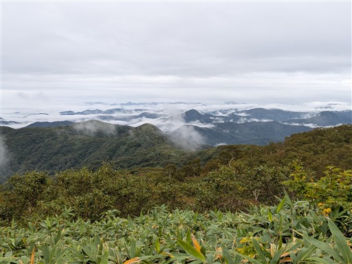
あとは展望の良い稜線を歩いていく。
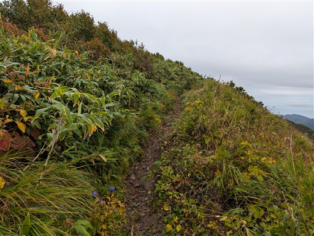
この辺りは標高が高いのでブナではなくダケカンバが育っている。
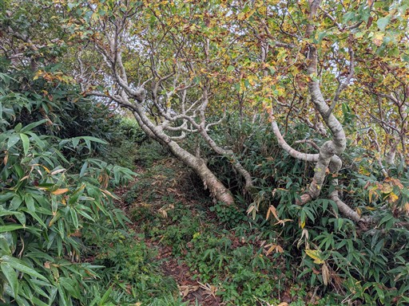
白神岳山頂が目の前に見えてきた。
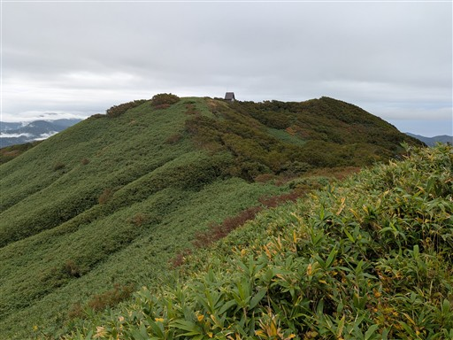
斜面の笹原が美しい。
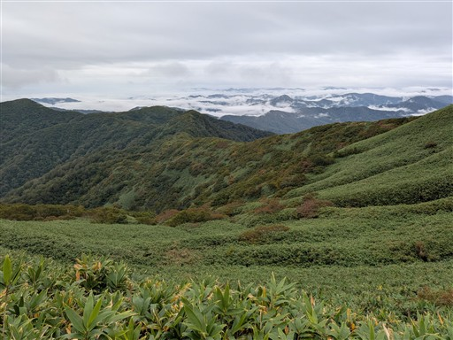
左は向白神岳。白神山地の最高峰だ。
奥に僅かに見えているのは、もしかして岩木山？
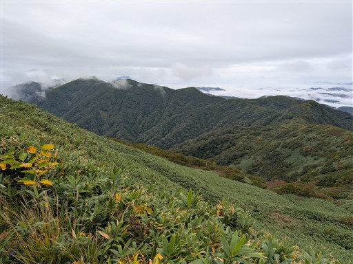
山頂手前に立派な石祠がある。
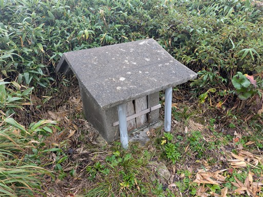
そして立派な避難小屋。まだ新しそうだ。近くにトイレもある。
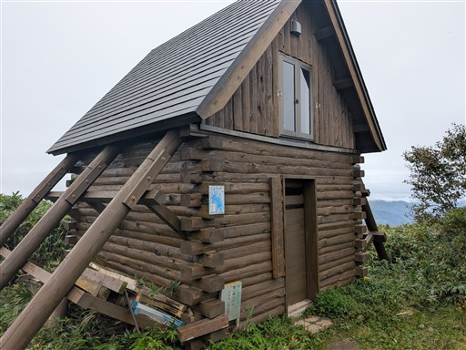
白神岳山頂に到着。標高1232m。
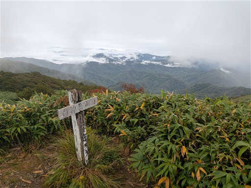
雲に覆われて展望はなくなってしまった。残念。
でも、稜線に到達した時に少しでも展望が広がって良かった。
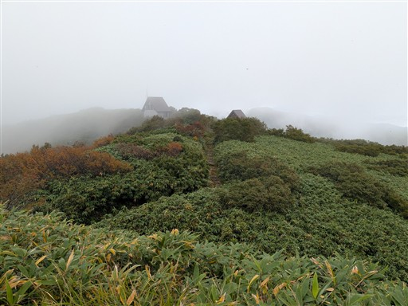
山頂で昼食をとっていると雨が降ってくる。早めに退散することにする。
一時は晴れ予報も出ていたが、結局台風の雲はここまでやって来てしまった。
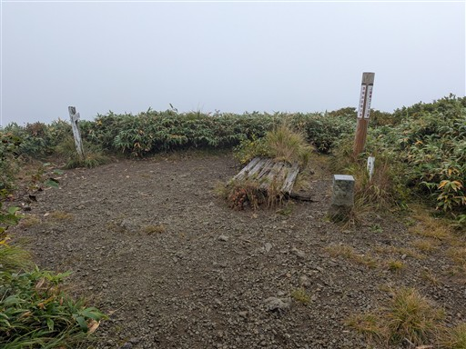
雲の中の稜線を下る。風が無いのは助かる。
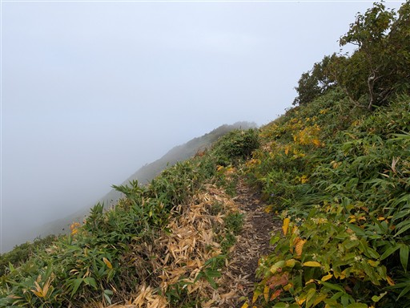
ブナの森を下っていく。森の中に入ると雨はもう気にならない。
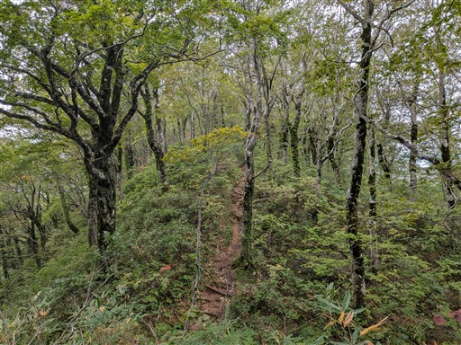
ホコリタケ。こちらは成菌。突っつくと胞子が出る。
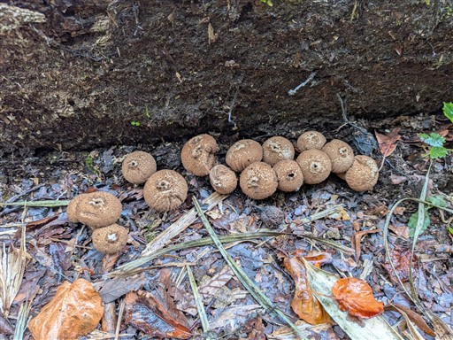
幻想的な森の風景。
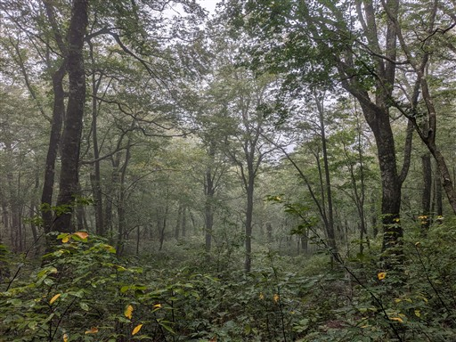
登山者カウンターを通過。
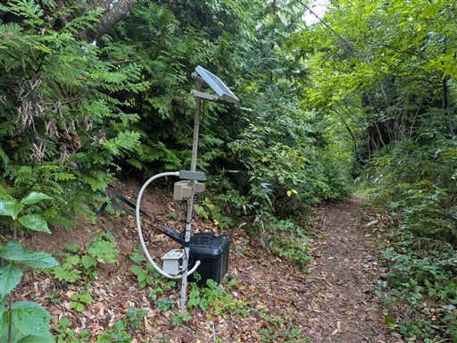
下山。登山口には靴底の泥を落とすマットがある。在来種保護のためだ。
もしかしたら晴れるかもという期待は裏切られたが、静かなブナの森と少しの展望を楽しめた登山だった。
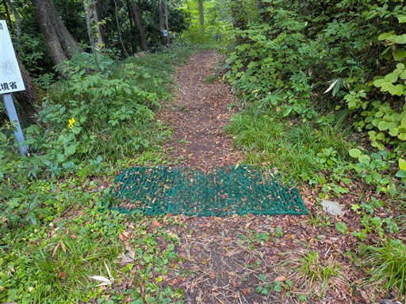
下山後は北に向かう。五能線の踏切に捕まる。
日本屈指の絶景ローカル線だ。
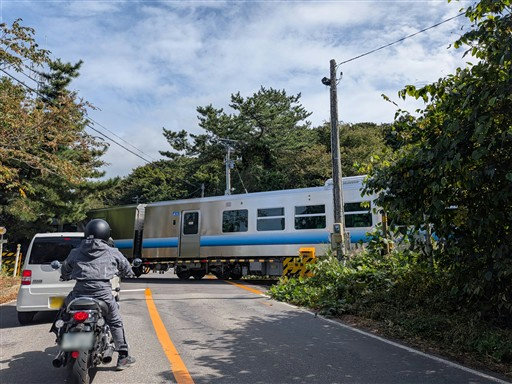
車道を走っていると不思議な岩を見かける。観光客が岩の上にいるようだ。
車を停めて行ってみることにする。
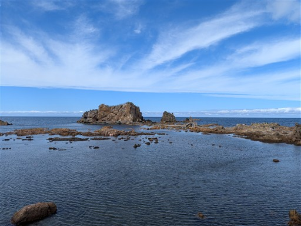
入口。まずは神社にお参り。
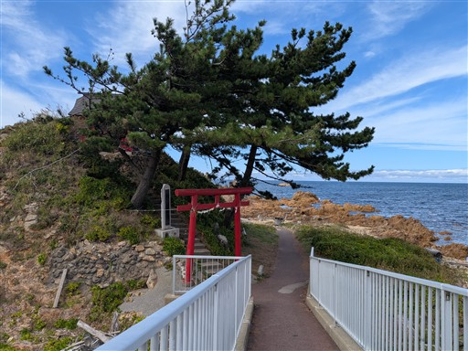
お賽銭を入れる穴はとてつもなく小さい。
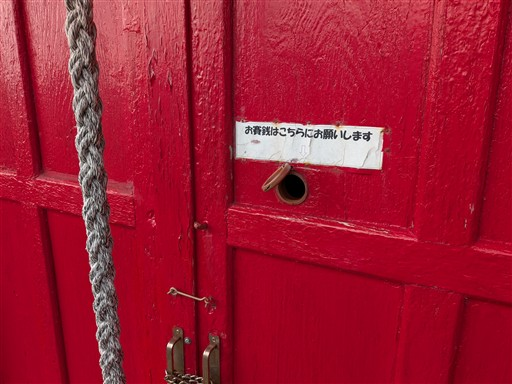
大岩に向かう。
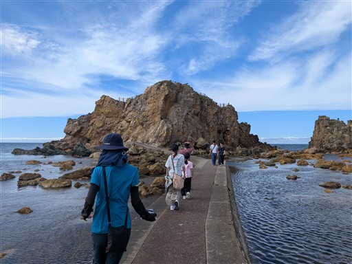
手掘りのトンネルを抜ける。こういう道の付け方、好きだ。
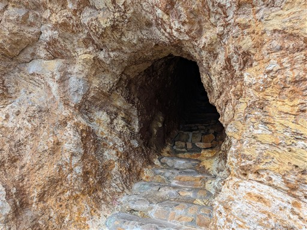
岩の上に出てくる。遠くから眺めた感じよりも平凡な地形だ。
白神岳では昼食を途中で切り上げたので、ここで残りを食べることにする。
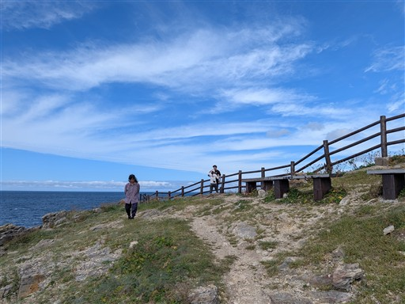
青い海が広がっている。風が心地よい。
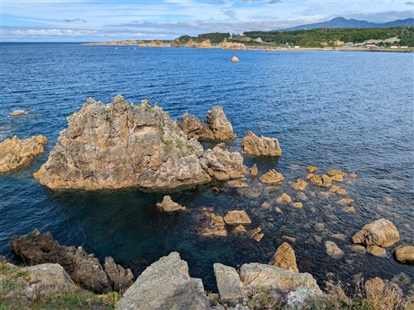
水はとてもきれい。シュノーケリングをやったら楽しそうな場所だ。
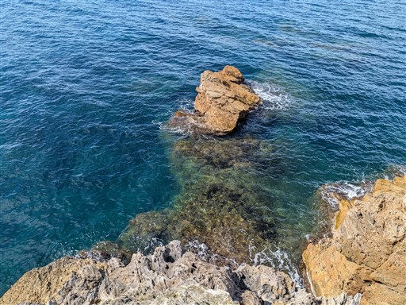
岩の上は平凡でも側面は荒々しい。非常に複雑な形状だ。
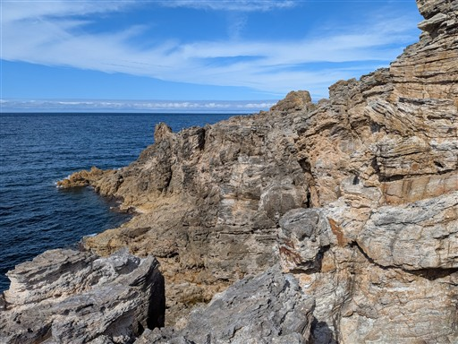
水の中を覗いてみると、ちゃんと魚がいる。
ハゼやヤドカリも見つけた。
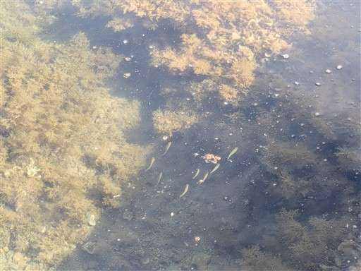
大岩を後にする。ちょっと立ち寄るのに良い観光スポットだった。
絶景ロードを北上する。これまた絶景ローカル線の五能線がさらに海側を通っている。
次なる目的地、千畳敷海岸に到着する。
地震で隆起したという広大な海岸段丘面。
周囲を散策。観光客が多く訪れている。
ほぼフラットなので荒崎海岸のような歩く楽しさは無いが、ここまで広大な岩は珍しいのだろう。
先の方まで歩いてみる。
岩の先。海を眺めながらおやつを食べる。
門のように聳える大きな岩がある。これも不思議な地形だ。
次に、鶴の舞橋を訪れる。溜池に架けられた観光用の橋だ。
少し遠い場所にある無料駐車場に車を停める。
こちらは有料駐車場。売店があるのでソフトクリームを買って食べる。
橋の入口。
橋を渡る。改修工事が行われていたらしいが、最近再開したようだ。
渡った先から撮影。三連太鼓橋で形状が美しい。
背後には岩木山がドーンと聳えるはずだが、本日は雲の中だ。
橋を渡ったらそのまま駐車場に戻る。少し離れた駐車場でちょうど都合がよかった。
つがる温泉で汗を流す。
頭が青森のキャラクター。
夕飯は来々軒で。月曜定休の店が多く、店探しに苦労した。